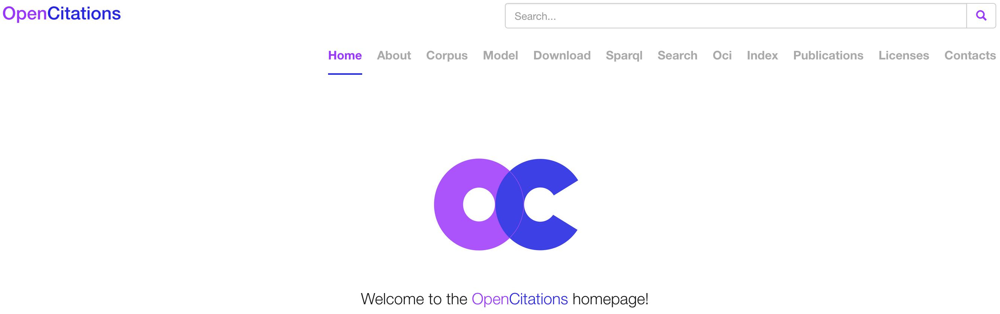

Main topic

Semantic publishing: the latest revolution in scholarly publishing
The term has been introduced for the very first time by David Shotton, and concerns the enhancement of scholarly publications by the use of modern web standards to improve interactivity, openness and usability, including the use of ontologies to encode rich semantics in the form of machine-readable RDF metadata
Citations

A citation is a conceptual directional link from a citing entity to a cited entity, created typically by the inclusion of a reference in the reference list or in a footnote
OpenCitations
OpenCitations is an infrastructure organization for open scholarship dedicated to the publication of open citation data as Linked Open Data using Semantic Web technologies, thereby providing a disruptive alternative to traditional proprietary citation indexes
More info at: Peroni, S., & Shotton, D. (2020). OpenCitations, an infrastructure organization for open scholarship. Quantitative Science Studies, 1(1), 428–444. https://doi.org/10.1162/qss_a_00023
Opportunities
Plenty of – and open to new – ideas and new developments in terms of infrastructure (i.e. programming), and also in terms of analytical studies (i.e. bibliometrics and scientometrics), theoretical analysis (i.e. understanding the functions of citations), and modelling (i.e. SPAR Ontologies)
The Research Centre for Open Scholarly Metadata and the Digital Humanities Advanced Research Centre allow students to do internships in this fascinating and challenging domain, working on one of the most cited and used Open Science projects of the past two years
Titles of a few thesis done
Fabio Mariani
Development of OpenCitations Meta: methodology and implementation
Sebastian Barzaghi
Development of an ontology for modelling medieval manuscript: the case of Progetto IRNERIO
Gianmarco Spinaci
Uncovering the boundaries of Digital Humanities: a bibliometric analysis